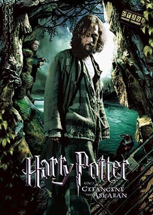

哈利波特3: 阿兹卡班的囚徒 (Harry Potter and the Prisoner of Azkaban)
作者：J.K.罗琳 (Joanne Kathleen Rowling) [英国]
哈利波特十分不情愿的在姨妈家里度暑假，得不到魔法界的一切消息，罗恩和赫敏的信便成了他的唯一安慰。玛姬姑妈前来探望哈利的姨夫，哈利因为受不了她对哈利父母的污蔑，把玛姬姑妈变成了一个胀大的气球。害怕受到惩罚的哈利逃进夜幕，于是开始了新的冒险。
难度：
大学
长度：
长篇
分类：
魔幻
第一章: 猫头鹰邮递 Owl Post
第二章: 玛姬姑妈的大错误 Aunt Marge's Big Mistake
第三章: 骑士公共汽车 The Knight Bus
第四章: 破釜酒吧 The Leaky Cauldron
第五章: 摄魂怪 The Dementor
第六章: 猎鹰和茶叶 Talons and Tea Leaves
第七章: 衣柜里的博格特 The Boggart in the Wardrobe
第八章: 胖夫人逃走 Flight of the Fat Lady
第九章: 不祥的失败 Grim Defeat
第十章: 活点地图 The Marauder's Map
第十一章: 火弩箭 The Firebolt
第十二章: 守护神 The Patronus
第十三章: 格兰芬多对拉文克劳 Gryffindor Versus Ravenclaw
第十四章: 斯内普的妒忌 Snape's Grudge
第十五章: 魁地奇决赛 The Quidditch Final
第十六章: 特里劳妮教授的预言 Professor Trelawney's Prediction
第十七章: 猫，耗子和狗 Cat, Rat, and Dog
第十八章: 月亮脸，虫尾巴，大脚板和尖头叉子 Moony, Wormtail, Paddfoot, and Prongs
第十九章: 伏地魔的仆人 The Servant of Lord Voldemort
第二十章: 摄魂怪的吻 The Dementor's Kiss
第二十一章: 赫敏的秘密 Hermione's Secret
第二十二章: 又见猫头鹰邮递 Owl Post Again